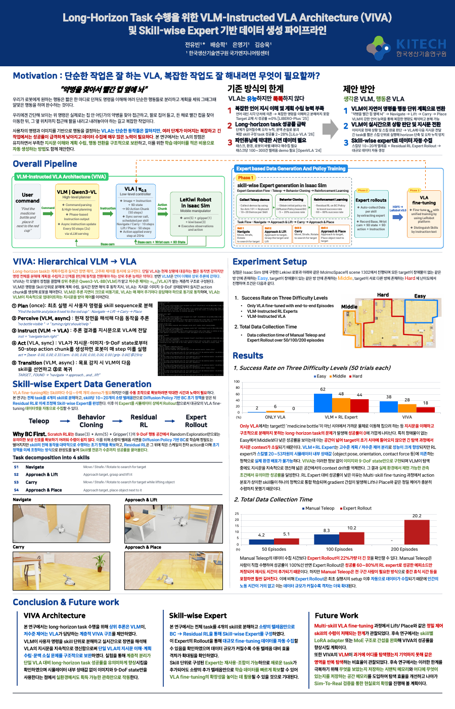

Yubin Jeon전유빈
B.S. Candidate, Smart Vehicle Engineering · Konkuk University, Seoul
I work on how robots can perform long-horizon tasks in homes and factories using foundation models — and on how to collect the data that makes those models work.
Vision-Language-Action models and robot foundation models
Efficient data collection — teleoperation, human demos, simulation rollouts
Task planning for long-horizon manipulation
Publications
1VIVA: VLM-Instructed VLA Architecture for Long-Horizon Tasks and Skill-wise Expert based Data Generation Pipeline
Yubin Jeon*, S. Bae, Y.-G. Eun, S.-W. Kim

View full poster (PDF)Research Experience
1Student Researcher
Korea Institute of Industrial Technology (KITECH), National Engineering R&D Center · Ansan, Korea
- VIVA (VLM-Instructed VLA Architecture) — designed a hierarchical VLM-VLA architecture to break the long-horizon limit of a single VLA. Qwen3-VL decomposes a command into a skill plan and asynchronously rewrites π0.5's instruction from real-time scene understanding.
- Skill-wise Expert based Data Generation — cut the cost of teleoperation data by generating VLA fine-tuning data from simulator rollouts with skill-wise experts (teleop demos → Diffusion Policy BC → Residual RL).
Education
2B.S. in Smart Vehicle Engineering
Konkuk University, Institute of Convergence Engineering · Seoul, Korea
- Cumulative GPA 4.06 / 4.50 · Major GPA 4.08 / 4.50
H-Mobility Class — Robotics Track
Hyundai NGV, Hyundai Motor Group · Industry-academia program
- ROS/Python, kinematics & motion planning, control & dynamics, perception & state estimation.
- Completed the Car Inside Out track in parallel — vehicle architecture and powertrain fundamentals.
Awards & Honors
7Seoul RISE Director's Award — 1st Physical AI Hackathon
Team Lead, Team Ipalcheongchun · Track: Fine Folding (bimanual cloth folding)
- Bimanual teleop setup, demo collection, ACT model training and inference.
Encouragement Award — HL FMA 2025 aMAP Stride Championship
Team Lead, Team Ganadi · MORAI + ROS1
- GPS–IMU fusion for state estimation, curvature-based velocity planning, custom ROS messages for planning and control.
Special & Excellence Awards — 2025 Univ. Creative Mobility Competition
Planning/Control SW Module, Team KAI · Autonomous Driving + Creative Technology tracks
- Centroid-graph-based greedy path planner with steering-sensitivity adaptive Pure Pursuit.
- Delaunay-triangulation path generation for cone-gate driving with curvature- and velocity-adaptive Pure Pursuit.
Grand Prize — 8th Kookmin Univ. Autonomous Driving Competition
Team Lead, Team KAI
- Reed–Shepp + Stanley parking in the preliminary (Gazebo); YOLO lane estimation and camera–LiDAR calibration for overtaking in the final (ROS2, real vehicle).
ETRI Director's Award — 4th Intl. Collegiate EV Autonomous Driving Competition
Team Lead, Team S.V.E. · Basic Autonomous Mobility Race
- micro-ROS Arduino–Jetson communication pipeline, 2D LiDAR + VFH wall-section driving, encoder + IMU odometry for waypoint navigation.
President's List — Rank 1 / 37
Konkuk University, Institute of Convergence Engineering
- Semester GPA 4.50 / 4.50.
Technical Documentation
6- VIVA — VLM-Instructed VLA Architecture Hierarchical VLM–VLA design, asynchronous instruction rewriting, and the evaluation protocol behind the KSME 2026 poster. Report20 pp
- Skill-wise Expert based Data Generation Pipeline for generating VLA fine-tuning data from simulator rollouts — teleop demos, Diffusion Policy BC, Residual RL. Report41 pp
- Lekiwi Setup & Teleoperation Manual Mobile-manipulator bring-up end to end: motor IDs, calibration, leader–follower teleoperation, and object spawning. Manual53 pp
- VLM Fine-tuning Manual Workspace and Conda setup through data collection, training, inference, and troubleshooting — with a Qwen3.5-9B fallback comparison. Manual49 pp
- Team K.A.I. — Formula Technical Report Full design report submitted for the 2025 Univ. Creative Mobility Competition, where the team took Special and Excellence awards. Tech Report119 pp
- 1st Physical AI Hackathon — Fine Folding Write-up of the bimanual cloth-folding entry that won the Seoul RISE Director's Award: teleop rig, demo collection, ACT policy. Report6 pp